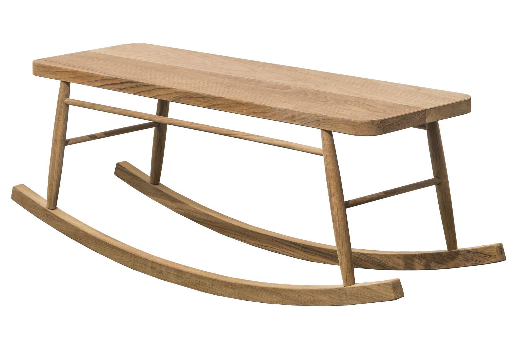
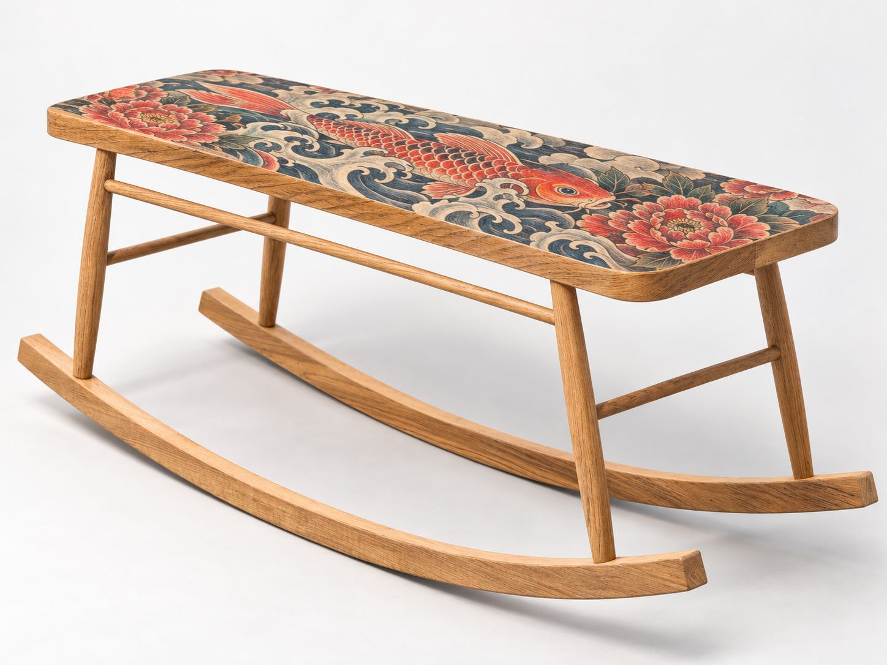
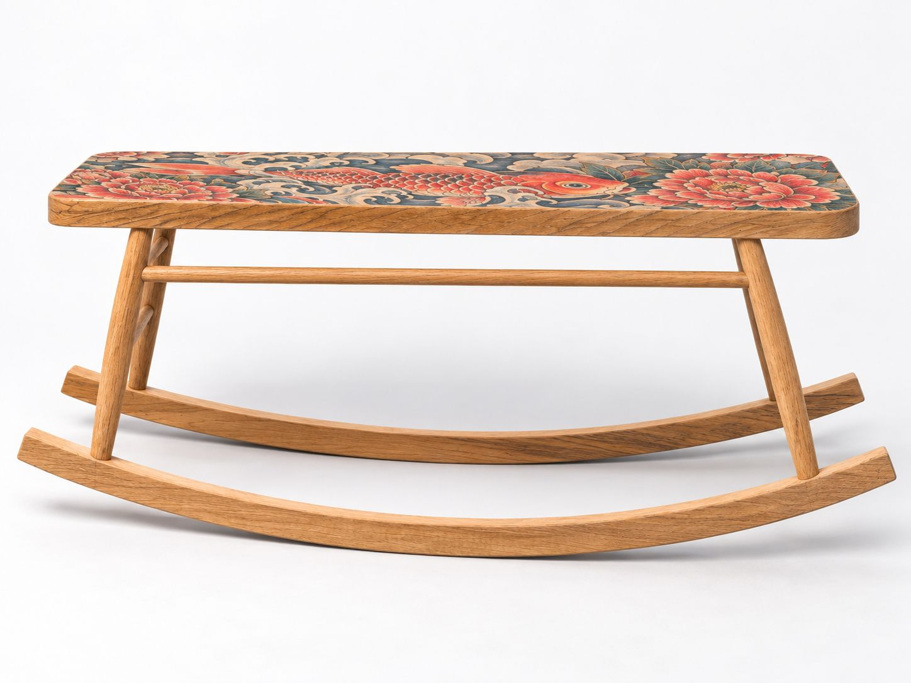

WORK 09 / 29
Rocking Bench
Childhood memories reimagined through movement and illustration.
Year2018
MaterialsTeak wood
StageLimited edition

DESIGN STORY
Rocking Bench revisits the simple pleasure of movement associated with childhood. Its familiar bench form becomes an invitation to play, pause and remember. A special edition introduces hand-drawn, coloured-pencil tattoo artwork across the timber surface, allowing illustration and furniture to meet. The result retains the original's sense of nostalgia while taking on a more expressive, collectible character.
PROJECT LINKS
- Deesawatwww.deesawat.com
PROJECT DETAILS
- Brand / Manufacturer
- Deesawat Industries Company Limited

